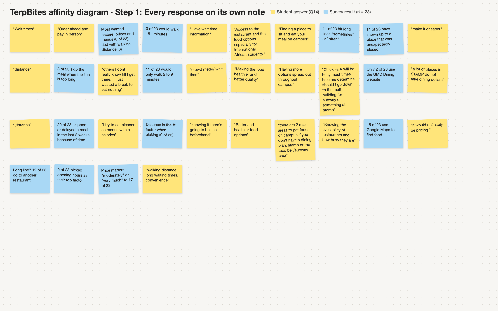
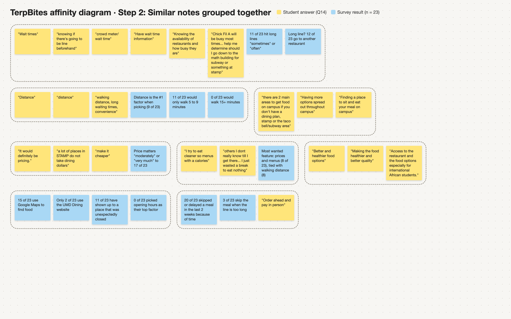
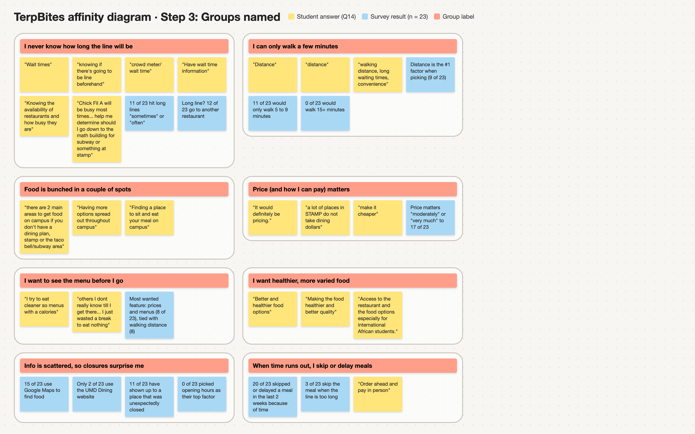
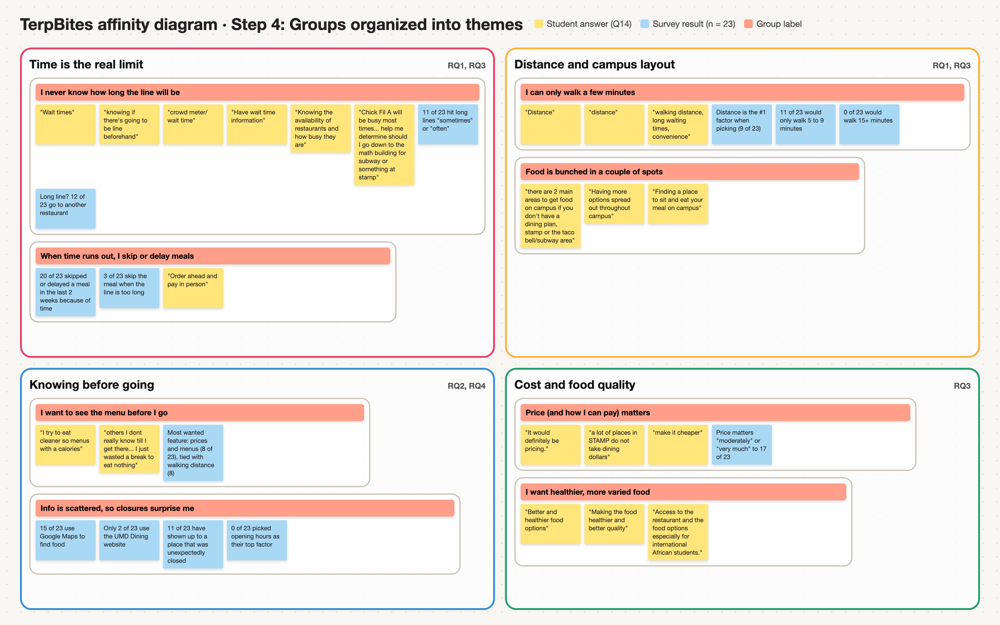

Milestone 2: User Research & Synthesis
Affinity diagram
We surveyed 23 students about how they get food between classes, put their answers on sticky notes, and grouped them until patterns showed up. This page walks through how we did it and what we learned.
Project context
Problem statement
Students at the University of Maryland need a quick and reliable way to get affordable food on and near campus. Right now, many students deal with unreliable dining hours, a confusing campus layout, and no clear idea how long the wait or the walk will take. Because there isn't reliable information, students waste their breaks walking to places that turn out to be closed, or they end up skipping meals altogether.
Research questions
- RQ1How do UMD students currently decide where to eat between classes?
- RQ2What information matters most to students when they have limited time to get food?
- RQ3What problems do students run into with dining hours, prices, distance, and wait times?
- RQ4How could TerpBites make finding food between classes faster and easier?
Our data
We ran a 14-question Google Forms survey about dining habits and got 23 responses (22 current UMD students, 7 living on campus and 16 commuters). The last question was open-ended: "If you could improve one thing about getting food on or near campus between classes, what would it be?" Those answers, plus the key multiple choice results, are what went into our affinity diagram.
Our process
We followed the four steps of affinity diagramming. Each screenshot shows our board at the end of that step.
-
1
Put every response on a note
Every answer to our open-ended question became its own yellow note, written exactly how the student said it. Long answers with more than one idea were split into separate notes. The most important multiple choice results became blue notes so the numbers could sit next to the quotes.

Step 1: all of our notes on the board -
2
Group similar notes
We moved notes that seemed related next to each other without naming the groups yet, so the data could lead instead of our own assumptions.

Step 2: first rough clusters -
3
Name each group
We gave each group a short label written from a student's point of view, like "I never know how long the line will be." We ended up with eight groups.

Step 3: labeled groups -
4
Organize groups into themes
We combined the eight groups into four bigger themes and tagged each one with the research questions it helps answer. These themes are what we use in the analysis below.

Step 4: final themes
Analysis
The biggest thing we learned is that time, more than food, is the main problem. 20 of the 23 people we surveyed said they skipped or delayed a meal in the last two weeks because they didn't have enough time between classes. The most common request in the open-ended answers was a way to know about lines before walking over ("knowing if there's going to be line beforehand," "crowd meter/ wait time"). When the line is too long, about half of the respondents (12 of 23) just go to another restaurant, which uses up even more of their break.
Distance was the top factor people use to pick where to eat (9 of 23), and most people are only willing to walk 5 to 9 minutes. Nobody said they would walk 15 minutes or more. Students also pointed out that food is bunched up in a couple of spots, mainly the Stamp and the Taco Bell and Subway area in Kirwan, so if your classes are somewhere else your options are limited. This backs up the "awkward campus layout" part of our problem statement.
For information, 15 of 23 people use Google Maps and only 2 use the UMD Dining website, even though that's where the official hours are posted. 11 people said they've shown up to a place that was unexpectedly closed, but nobody picked opening hours as their top factor, which makes us think students just assume a place is open until it isn't. Price also matters a lot (17 of 23 said moderately or very much), and one student pointed out that a lot of places in the Stamp don't take Dining Dollars. A few students wanted healthier food and to see menus ahead of time, like the student who said they "wasted a break to eat nothing" because they didn't know what a place served.
Put together, the main user needs are to know how busy a place is before going, to only see places they can get to and back from in time, to see menus, prices, and payment options ahead of time, and to trust that a place is actually open. These match the features people said would be most useful: walking distance (8), prices and menus (8), and wait times (6). For our next steps, we're going to update our personas. 16 of our 23 respondents were commuters, so Maya's situation is more common than we expected, and wait times should be a bigger pain point for both Maya and Jordan. When we move into ideation, our design goals are to show estimated wait or busy times, filter places by how far they are from your next class, and show menus, prices, and accepted payments in one place.
One limitation is that our sample was small and skewed toward seniors (14 of 23), and one respondent said they weren't a current UMD student. We want to check these findings with more freshmen and on-campus students during our interviews and usability testing.